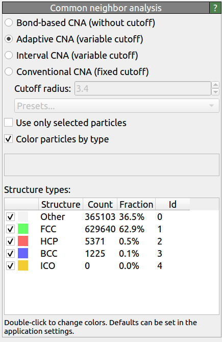

Common neighbor analysis
{kind=link}
This analysis modifier performs the Common Neighbor Analysis (CNA) [Honeycutt and Andersen, J. Phys. Chem. 91, 4950] for a particle system. The CNA is an algorithm to compute a fingerprint for pairs of atoms, which is designed to characterize the local structural environment. Typically, the CNA is used as an effective filtering method to classify atoms in crystalline systems [Faken and Jonsson, Comput. Mater. Sci. 2, 279], with the goal to get a precise understanding of which atoms are associated with which phases, and which are associated with defects.
The modifier supports four different modes of operation:
- Conventional CNA (with fixed cutoff)
Here, a threshold distance criterion is used to determine whether a pair of atoms is bonded or not. The cutoff distance must be chosen according to the crystal structure at hand. For face-centered cubic (FCC) and hexagonal close-packed (HCP) structures the cutoff radius must lie midway between the first and the second shell of neighbors. For body-centered cubic (BCC) structures the cutoff radius should be positioned between the second and the third neighbor shell. OVITO provides a list of optimal cutoff distances for FCC and BCC crystal structures formed by common pure elements. These optimal radii can be found in the Presets drop-down list.
- Adaptive CNA (with variable cutoff)
Sometimes it may be difficult to choose the right cutoff radius for the conventional CNA, in particular in the case of multiphase systems. This is why an adaptive version of the CNA has been developed that works without a fixed cutoff. The Adaptive Common Neighbor Analysis (a-CNA) method [Stukowski, Modell. Simul. Mater. Sci. Eng. 20, 045021] determines the optimal cutoff radius automatically for each individual particle.
- Interval CNA (with variable cutoff)
Sometimes an appropriate cutoff cannot be found using either the conventional CNA or the adaptive CNA, in particular at elevated temperatures. In this case the Interval Common Neighbor Analysis (i-CNA) method [Larsen] may be used. For each particle it investigates all possible threshold choices. This is slower than the other methods but has a better recognition rate.
- Bond-based CNA (without cutoff)
The modifier also supports a bond-based mode of operation. Then the CNA indices are computed based on the existing network of bonds between particles (without using a cutoff radius and irrespective of the distance between particles). This mode requires that bonds between particles have previously been defined, for example using a Create bonds modifier or by loading them from a data file. In the bond-based mode, the modifier outputs the computed per-bond CNA indices as a new bond property named
CNA indices, which can be used for further statistical analyses. The computed CNA bond indices may be accessed from a Python script, see this example.
Modifier outputs
The modifier outputs the classification results as a new particle property named Structure Type.
This information allows you to subsequently select particles of a certain structural type, e.g. using the
Select type modifier.
The structural type determined by the algorithm is encoded as an integer value:
0 = Other, unknown coordination structure
1 = FCC, face-centered cubic
2 = HCP, hexagonal close-packed
3 = BCC, body-centered cubic
4 = ICO, icosahedral coordination
In addition, the modifier assigns colors to the particles (by setting the Color
particle property) to indicate their computed structural type. The color representing each structural type
can be customized by double-clicking the corresponding entry in the table or, permanently, in the application settings dialog.
Furthermore, the modifier emits global attributes to the data pipeline reporting the total number of particles matching
each of the supported structural types. These attributes are named CommonNeighborAnalysis.counts.XXX, where “XXX”
stands for the name of each structure supported by the modifier. These analysis statistics may be exported using OVITO’s data export function
or displayed as live information in the viewports using a text label layer.
Usage notes
The modifier needs to see the complete set of input particles to perform the analysis. It should therefore be placed at the beginning of the data pipeline, preceding any modifiers that delete some of the particles.
The option Use only selected particles restricts the analysis to the currently selected particles. In this case, unselected particles will be ignored (as if they did not exist) and are all assigned the structure type “Other”. This option is useful if you want to identify defects in a crystal type not directly supported by the common neighbor analysis algorithm but having a sub-lattice that is supported.
Alternatives
OVITO provides implementations of other structure identification methods, for instance the Ackland-Jones analysis modifier, the Identify diamond structure modifier or the Polyhedral template matching modifier. Furthermore, the Centrosymmetry parameter modifier can also be used to detect defects in crystal lattices.
See also
ovito.modifiers.CommonNeighborAnalysisModifier (Python API)